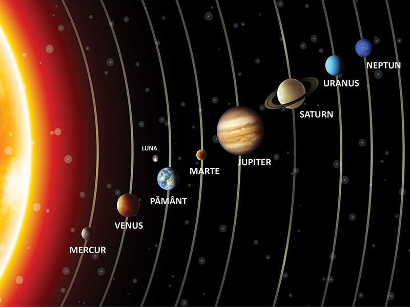
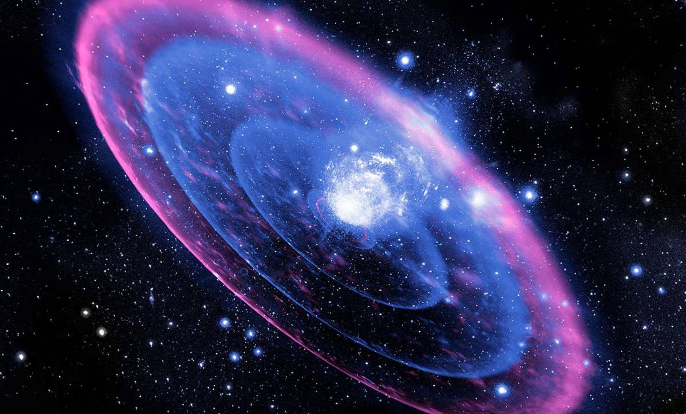
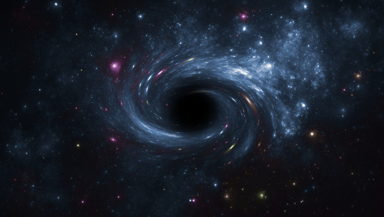
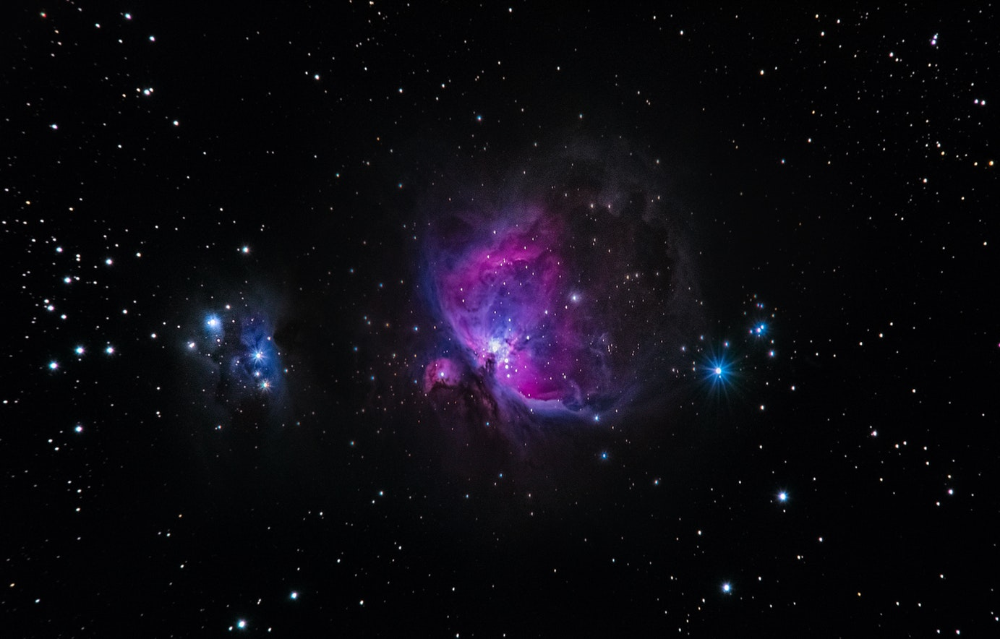

Sistemul solar |
||
|---|---|---|
|  |
Sistemul solar este format din Soare împreună cu sistemul său planetar (care cuprinde opt planete împreună cu sateliții lor naturali) și alte obiecte non-stelare. O planeta este ținută pe orbita din jurul soarelui sau de două forțe opuse. Acestea sunt forța gravitatională si cea centrifugă. Propria gravitație a planetei determină forța sa centrifugă si impiedică ciocnirea sa cu soarele.Forța gravitațională mai puternică a soarelui impiedică planeta să se indeparteze de cosmos. |
|
Supernova |
||
|
O supernovă este o explozie stelară mai puternică decât o novă. Supernovele sunt extrem de luminoase și cauzează o explozie de radiații care adesea este mai strălucitoare decât o întreagă galaxie, înainte de a dispărea după câteva săptămâni sau luni. De-a lungul acestui interval, o supernovă poate radia tot atâta energie cât ar putea emite Soarele pe toată durata sa de viață Explozia elimină mare parte sau tot materialul unei stele cu o viteză de până la 30.000 km/s |
 | |
Gaura neagra |
||
|  |
O gaură neagră este o regiune în spațiu-timp cu o forță gravitațională atât de mare încât, nimic nu poate scăpa odată intrat în ea. Teoria relativității generale prezice că o masă suficient de compactă poate deforma spațiul și timpul astfel încât să formeze o gaură neagră. Limitele unei astfel de regiuni din care nimic nu poate scăpa este numită orizontul evenimentelor. |
|
Materia intunecata |
||
|
Materia întunecată este în prezent un tip necunoscut de materie despre care se consideră că ar conține o mare parte din masa totală a universului. Materia întunecată nu emite și nici nu absoarbe lumina sau radiațiile electromagnetice.Se estimează că materia întunecată constituie 73% din materia din univers și 23% din masa-energia sa. |
 | |